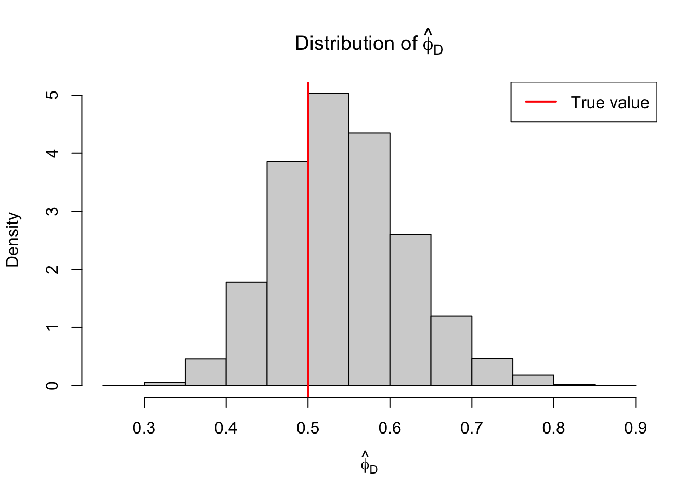
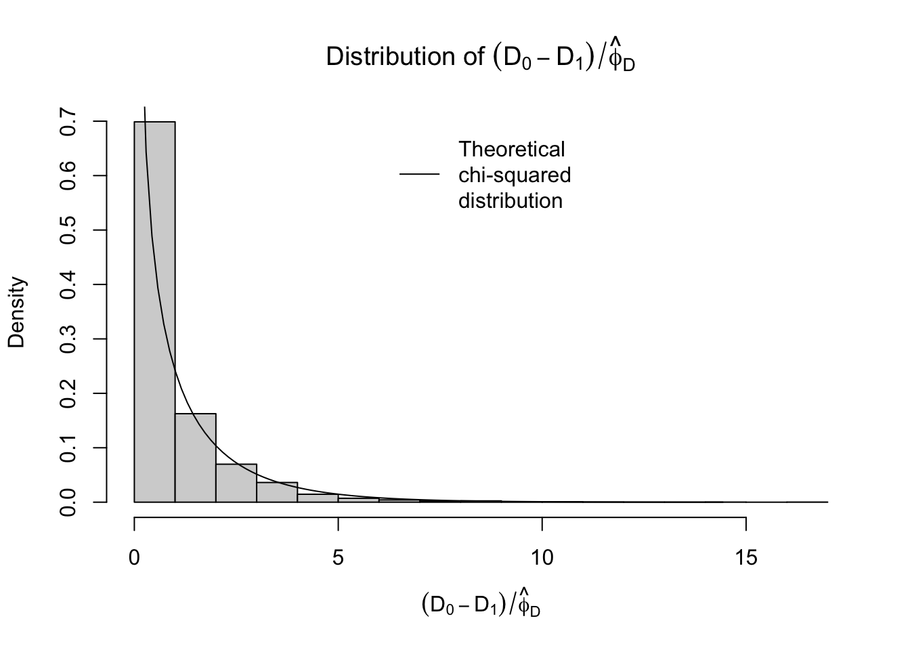
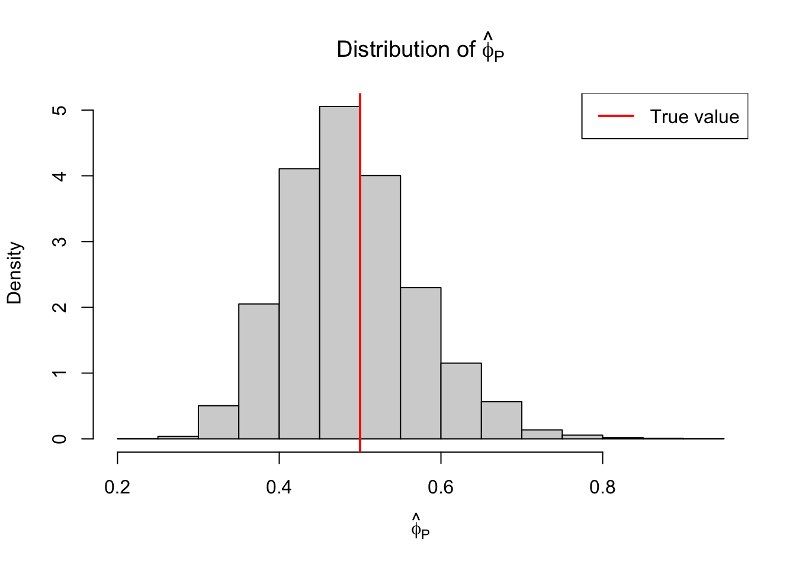
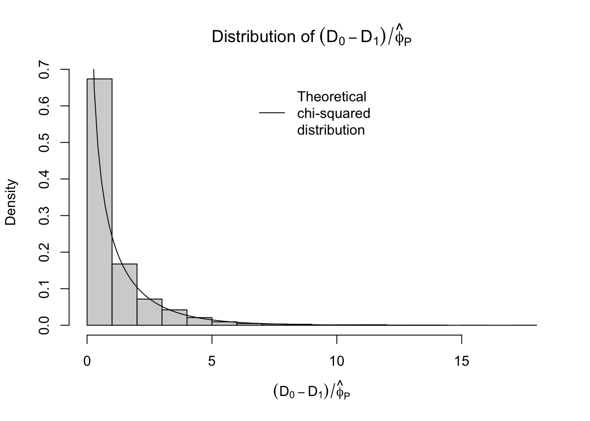

In this post and the following, I go through Chapter 3 of Simon Wood’s textbook Generalized Additive Models(2017), which covers GLMs (as a prerequisite for understanding GAMs). I supplement my paraphrasing of the textbook with implementations in R that demonstrate the theory.
Theory
A generalized linear model (GLM) does two things:
It equates a smooth, monotonic transformation of the expectation of some target variable to a learned linear function of a set of predictor variables.
It specifies the distribution of the target variable to be some specific exponential family.
That is, a GLM says \[
g(\mathbb{E}(Y)) = \beta_0 + \beta_1X_1 + \cdots + \beta_k X_k \equiv \eta
\tag{1}\] and \[
Y \sim \text{some exponential family},
\tag{2}\] where \(Y\) is the target variable, \(X_1, \ldots, X_k\) are the predictor variables, \(\beta_0, \ldots, \beta_k\) are weights to be learned, and \(g\) is the smooth monotonic function known as the “link function”.
What is an exponential family?1 In the univariate case, a family of distributions is an exponential family with canonical parameter\(\theta\) if its probability density function \(f_\theta\) takes the form
for some known, specific functions \(b\), \(a\), and \(c\) and some parameter \(\phi\). In some cases, \(\phi\), which is known as the scale parameter because it usually plays a role in determining the variance of \(Y\), will in fact be unknown, which, according to Wikipedia, would render our family an “overdispersed” exponential family.
As an example, the normal distribution is an exponential family since
How do we simultaneously specify a linear model for the transformed mean of \(Y\)Equation 1 while also ensuring that \(Y\) has the pdf of an exponential family Equation 2? It’s actually quite easy because of the following property of exponential families:
\[
\mathbb{E}(Y) = b'(\theta)
\tag{3}\]
In the normal case, we get \(\mathbb{E}(Y) = b'(\theta) = b'(\mu) = \frac{d}{d\mu}\mu^2/2 = \mu\), as one would hope.
Equation 3 directly follows by applying the general fact that the expectation of the score function vanishes: \[
\mathbb{E}\left[\frac{\partial}{\partial\theta}\log f_\theta(y)\right] = 0
\] to the score function for an exponential family: \[
\frac{\partial}{\partial\theta}\log f_\theta(y) = \frac{\partial l}{\partial \theta} = (y - b'(\theta))/a(\phi)
\tag{4}\]
The implication of Equation 3 is that the linear model in Equation 1 is in fact a model for the canonical parameter \(\theta\):
We can also derive a generic expression for the variance of \(Y\) in terms of the functions \(a\), \(b\), and \(c\). First note that the second derivative of the log-likelihood is
Then apply the general fact \(\mathbb{E}\left(\partial^2l/\partial\theta^2\right) = -\mathbb{E}\left\{ (\partial l / \partial \theta)^2 \right\}\) along with Equation 4 to find that
In principal, \(a\) can be anything, but if \(\phi\) is unknown, estimation will be difficult unless we have \(a(\phi) = \phi/\omega\) for some known \(\omega\). In most cases this \(\omega\) will just be 1, but in the normal case, using a different \(\omega_i\) for each sample \(i\) corresponds to weighted regression.
Finally, let’s relate the variance \(\Var(Y)\) to the mean \(\mu \equiv \mathbb{E}(Y)\). By Equation 3, we have \(\theta = b'^{-1}(\mu)\), so by Equation 6, we have \[
\Var(Y) = b''(b'^{-1}(\mu))a(\phi) = b''(b'^{-1}(\mu))\phi / \omega .
\] We define \(V(\mu) = b''(b'^{-1}(\mu)) / \omega\) so that we get the following relationship between variance and mean:
\[
\Var(Y) = V(\mu)\phi
\]
In the normal case, we get that \(V(\mu)\) is just the constant function \(1/\omega\), which makes sense because the mean and variance of a normal random variable are independent parameters, i.e. there shouldn’t be any equation relating the two.
Fitting
We fit generalized linear models to a sample of data point \(\{(\bX_i, Y_i)\}_{i=1}^n\) that we assume were generated independently by the model. Given observed design matrix \(\bX\) and response vector \(\by\), the log-likelihood of \(\bbeta\) is given by
where \(\theta_i = b_i'^{-1}(g^{-1}(\beta_0 + \beta_1X_{i1} + \cdots + \beta_k X_{ik}))\). While the \(b\) and \(c\) functions vary with the sample index \(i\), this is just to allow, for example, for different binomial denominators for each observation of a binomial response.
We would like to use Newton’s method to maximize the log-likelihood, which requires the gradient vector and Hessian of the log-likelihood. For the gradient, we have each partial derivative given by
Differentiating again (plus lots of algebra) gets you
\[
\frac{\partial^2 l}{\partial \beta_j \partial \beta_k} = -\frac{1}{\phi} \sum_i \frac{X_{i k} X_{i j} \alpha_i\left(\mu_i\right)}{g^{\prime}\left(\mu_i\right)^2 V_i\left(\mu_i\right)},
\] where \(\alpha_i\left(\mu_i\right)=1+\left(y_i-\mu_i\right)\left\{V_i^{\prime}\left(\mu_i\right) / V_i\left(\mu_i\right)+g^{\prime \prime}\left(\mu_i\right) / g^{\prime}\left(\mu_i\right)\right\}\). Note that the expected value of these second derivatives is the same, but with \(\alpha_i(\mu_i)=1\). If we define sample weights \(w_i = \alpha_i(\mu_i) / \left[g'(\mu_i)^2V_i(\mu_i)\right]\), then the Hessian of the log-likelihood is given by \(-\bX\bW\bX/\phi\), where \(\bW = \text{diag}(w_i)\). If we use \(\alpha_i(\mu_i)=1\) in the definition of \(w_i\), then this matrix becomes the expected Hessian or Fisher matrix, and we refer to these \(w_i\) as Fisher weights.
Defining \(\bG = \text{diag}(g'(\mu_i)/\alpha_i(\mu_i))\), we can write the gradient vector as \(\bX^T\bW\bG(\by - \bmu)/\phi\). The Newton updates then take the following form:
\[\begin{align}
\bbeta^{k+1} &= \bbeta^k + (\bX \bW \bX)^{-1}\bX^T\bW\bG(\by - \bmu) \\
&= (\bX \bW \bX)^{-1}\bX^T\bW\left\{\bG(\by - \bmu) + \bX \bbeta^k\right\} \\
&= (\bX \bW \bX)^{-1}\bX^T\bW\bz,
\end{align}\] where \(z_i = g'(\mu_i)(y_i - \mu_i)/\alpha_i(\mu_i) + \eta^k_i\) and \(\eta^k_i\) is the linear predictor for the \(i\)th sample at the \(k\)th iteration of the algorithm, i.e. \(\eta^k_i = \bX_i\bbeta^k\).
Notice that this looks like the solution to a weighted least squares problem where the “pseudodata” response vector is \(\bz\). If we could come up with some way to initialize \(\hat{\eta}_i\)’s, then we could repeatedly perform the following two steps in an “iteratively re-weighted least squares” (IRLS) algorithm:
Let \(\hat{\mu}_i = g^{-1}(\hat{\eta}_i)\). Compute weights \(w_i = \alpha_i(\hat{\mu}_i)/\left[g'(\hat{\mu}_i)^2V_i(\hat{\mu}_i)\right]\) and pseudodata \(z_i = g'(\hat{\mu}_i)(y_i - \hat{\mu}_i)/\alpha_i(\hat{\mu}_i) + \hat{\eta}_i\).
Solve the weighted linear least squares problem \[
\hat{\bbeta} = \text{argmin}_\bbeta \sum_i w_i(z_i - \bX_i \bbeta)^2
\] and set \(\hat{\eta}_i = \bX_i \hat{\bbeta}\)
We can choose to initialize \(\hat{\eta_i}\) with \(\hat{\eta_i} = g(y_i + \delta_i)\), where \(\delta_i\) is usually \(0\) but can be a small constant to ensure that \(g(y_i + \delta_i)\) is finite. Convergence can be based on monitoring the change in deviance (to be defined).
Example
Let’s generate some data from a Poisson GLM with the canonical log link function and then implement the IRLS algorithm to fit a model to it.
If we fit this model with the built-in R implementation, we get the following:
r_results =glm(y ~ x1 + x2 + x3, family = poisson, data = df)summary(r_results)
Call:
glm(formula = y ~ x1 + x2 + x3, family = poisson, data = df)
Coefficients:
Estimate Std. Error z value Pr(>|z|)
(Intercept) 0.18415 0.19189 0.960 0.337
x1 -0.29564 0.01514 -19.524 < 2e-16 ***
x2 -0.10064 0.01295 -7.774 7.6e-15 ***
x3 0.50590 0.02207 22.927 < 2e-16 ***
---
Signif. codes: 0 '***' 0.001 '**' 0.01 '*' 0.05 '.' 0.1 ' ' 1
(Dispersion parameter for poisson family taken to be 1)
Null deviance: 1343.4 on 99 degrees of freedom
Residual deviance: 111.1 on 96 degrees of freedom
AIC: 347.14
Number of Fisher Scoring iterations: 5
Now let’s implement the fitting ourselves.
First, let’s implement functions for computing the weights and pseudodata for given estimated fitted values at the current iteration of the algorithm. We will use Fisher weights, meaning that we will set \(\alpha(\mu) = 1\). Since we are using a log link function, we have \(g(\mu) = \log(\mu)\), so that \(g'(\mu) = 1/\mu\). Moreover, for the Poisson family, we have \(V(\mu) = \mu\). It follows that the weights are simply \(w_i = \mu_i\) and the pseudodata is \(z_i = (y_i - \mu_i)/\mu_i + \eta_i\)
In the limit as the sample size \(n\) goes to infinity, we have that the maximum likelihood estimator \(\hat{\bbeta}\) follows a normal distribution centered at the true parameter \(\bbeta\) and with variance-covariance matrix equal to the inverse of the Fisher information matrix \(\mathcal{I} = \E[\hat{\mathcal{I}}]\), where \(\hat{\mathcal{I}}\) is the Hessian of the negative log-likelihood. In the previous section, we derived this Hessian to be equal to \(\hat{\mathcal{I}} = \bX\bW\bX / \phi\) (and the expected Hessian i.e. Fisher information matrix is the same with \(\alpha(\mu) = 1\) used in the definition of \(\bW\)), so the asymptotic distribution of \(\hat{\bbeta}\) is \[
\hat{\bbeta} \sim N(\bbeta, \phi(\bX^T\bW\bX)^{-1})
\tag{8}\]
In the Poisson case, \(\phi=1\). Let’s extract this variance-covariance matrix from our fitting function and compare our estimated standard errors with R’s:
solve_pois_glm =function(X, y, niter=5, delta=1e-6) { eta =log(y + delta) beta_iters =vector("list", niter)for (i in1:niter) { mu =exp(eta) w =compute_pois_weights(mu) z =compute_pois_pd(y, mu, eta) mod =lm(z ~ X, weights = w) beta =coef(mod) beta_iters[[i]] = beta eta = beta[1] + X %*% beta[-1] } X_design =model.matrix(mod)# Get variance-covariance matrix of estimates# Exploiting R's vector recycling for efficient diagonal multiplication XtWX =t(X_design) %*% (as.vector(w) * X_design) cov_matrix =solve(XtWX)return(list(beta_iters = beta_iters,vcov = cov_matrix ))}my_results =solve_pois_glm(X, y)
Consider the test of a nested generalized linear model:
\[
H_0: \mathbf{g}(\bmu) = \bX_0\bbeta_0 \quad \text{versus} \quad H_1: \mathbf{g}(\bmu) = \bX_1\bbeta_1,
\] where \(\bX_0\) has a strict subset of the columns of \(\bX_1\).
If we can compute the maximized log-likelihood under both models, we can perform a likelihood ratio test. This test is based on the fact that under \(H_0\), two times the difference in maximized log-likelihoods asymptotically follows a chi-squared distribution with degrees of freedom equal to the difference in model sizes:
Note that we cannot compute the log-likelihoods in the case where the scale parameter is not known, so we will need a different approach. In Poisson and binomial models, we do know the scale parameter, so we can use this test. For example, up to an additive constant, the log-likelihood for our running example (a Poisson GLM with the canonical link, aka Poisson regression) is
Let’s show empirically for our running example that the null test distribution is correct. We will generate a fourth spurious predictor variable that will have no effect on the response and fit the Poisson model with and without the inclusion of this fourth covariate. We will compute the LRT test statistic for this scenario over many replications and plot the distribution.
# Function to simulate data and compute the test statistic# mu is the ground truth expected value of the response# X_null is the design matrix under the null# X_full is the design matrix under the full modelsimul_pois_glm =function(X_null, X_full, mu) { y =rpois(n, mu) fit_null =glm.fit(x = X_null, y = y, family =poisson()) fit_full =glm.fit(x = X_full, y = y, family =poisson())# Deviance = 2 * phi * (LogLik_saturated - LogLik_model)# phi = 1 for Poisson# Dev_null - Dev_full = 2 * (LogLik_full - LogLik_null) test_stat = fit_null$deviance - fit_full$deviancereturn(test_stat)}# Simulateset.seed(771)df$x4 =runif(n, 0, 10) # spurious predictorX_null =model.matrix(~ x1 + x2 + x3, data = df)X_full =model.matrix(~ x1 + x2 + x3 + x4, data = df)B =5000# Recall that mu was previously generated with only x1, x2, and x3 (i.e. from the null model)test_stats =replicate(B, simul_pois_glm(X_null, X_full, mu))
We get the following distribution with the theoretical chi-squared density with one degree of freedom overlaid:
On the other hand, if we consider testing the significance of \(\beta_2\), which we know is non-zero, we get the following distribution of test statistics:
While the null distribution for the test statistic has been verified in this particular example, in general, the usual caveats about hypothesis tests apply. Specifically relevant to the case of generalized linear models is the distributional assumption about the response, e.g. that it is Poisson in our working example.
Let’s explore how robust the test is if the response does not actually follow the assumed distribution. Suppose, for example, that instead of having a Poisson distribution, the response has a negative binomial distribution.
# Function to simulate data and compute the likelihood ratio test statistic# The data is simulated from a negative binomial, so the models are mis-specified# mu is the ground truth expected value of the response# X_null is the design matrix under the null# X_full is the design matrix under the full model# theta is the auxiliary parameter in the negative binomial distribution# such that the variance of the random variable equals mu + mu^2/theta# As theta goes to infinity, we recover the Poisson distributionsimul_misspec_pois_glm =function(X_null, X_full, mu, theta=10) { y =rnbinom(n, size=theta, mu=mu) fit_null =glm.fit(x = X_null, y = y, family =poisson()) fit_full =glm.fit(x = X_full, y = y, family =poisson()) test_stat = fit_null$deviance - fit_full$deviancereturn(test_stat)}X_null =model.matrix(~ x1 + x2 + x3, data = df)X_full =model.matrix(~ x1 + x2 + x3 + x4, data = df)test_stats =replicate(B, simul_misspec_pois_glm(X_null, X_full, mu))
We get the following distribution with the theoretical chi-squared density with one degree of freedom overlaid:
The assumed null distribution is closer to 0 than the empirical null distribution of the test statistics, meaning that we’d have an inflated false positive rate if we were to use this assumed null to perform the hypothesis test.
If we crank up \(\theta\), we end up approaching the Poisson distribution, so the test becomes valid:
In my R function simul_pois_glm above, I rely on the deviance of the object returned by glm.fit. What is this quantity? It can be interpreted in a way similar to the residual sum of squares in ordinary linear models. That is to say, it is some measure of the imperfection of the model at capturing the full variation in the data. To define it, we must introduce the notion of a saturated model. A saturated GLM is essentially one that has one parameter for every data point in the sample. Such a model has sufficient degrees of freedom to stipulate that the expected value of each data point is equal to its observed value, and the maximum log-likelihood under this model is an upper bound on the maximum log-likelihood of any GLM with fewer parameters.
The deviance of a model with estimated parameter vector \(\hat{\bbeta}\) is defined as \[
D = 2\phi\{l_{\text{saturated}} - l(\hat{\bbeta})\}
\]
Counter-intuitively, because the factor \(\phi\) is included in this definition of the deviance, the deviance is independent of it because it cancels out with the \(\phi\) that appears in the denominator of the log-likelihood Equation 7. Thus, we can calculate the deviance even if we don’t know \(\phi\).
In contrast, we define the scaled deviance by \[
D^* = 2\{l_{\text{saturated}} - l(\hat{\bbeta})\},
\] and this quantity cannot be calculated without knowledge of the scale parameter.
It’s clear that we can re-express the log-likelihood ratio test statistic Equation 9 as a difference in scaled deviances \(D^*_0 - D^*_1\). Of course, if the scale parameter is unknown, there is no way for us to calculate this. For the binomial and Poisson distributions, for which the scale parameter is 1, the scaled deviance and regular deviance are equal, hence why we could use the deviance in our definition of simul_pois_glm above.
Handling unknown \(\phi\)
What do we do if \(\phi\) is unknown? Although we have seen how to obtain the ML estimator \(\hat{\bbeta}\) for \(\bbeta\) without estimating \(\phi\), we have only shown how to do hypothesis testing for the case where \(\phi\) is known. Moreover, if \(\phi\) is unknown, we will need to estimate it we want to get standard errors for \(\hat{\bbeta}\), since the asymptotic variance of \(\hat{\bbeta}\) includes a factor of \(\phi\)Equation 8.
One approach to estimating \(\phi\) is based on the approximation \(D^* \sim \chi^2_{n-p}\). If we take this approximation at face value, then because the expected value of a \(\chi^2_{n-p}\) random variable is \(n-p\) and \(\phi = D/D*\), the following is a reasonable estimator:
\[
\hat{\phi}_D = D / (n - p)
\tag{10}\]
To do hypothesis testing, we could take this estimator of \(\phi\), \(\hat{\phi}_D\), and use it to estimate the difference in scaled deviances, i.e. the twice log-likelihood ratio statistic, using the following statistic:
\[
(D_0 - D_1)/\hat{\phi}_D
\]
Let’s explore this using a Gamma GLM. We set the ground-truth \(\phi=0.5\) representing some under-dispersion (\(\Var(y) =\E(y)^2/2\)).
phi =0.5
We will use the same covariates and mean as before with our Poisson regression. That means that even though it’s not canonical (the canonical link function for a Gamma glm would be the inverse function), we are using a log link function. This is actually a more reasonable link function in most cases since the mean of the Gamma must be positive, so using an inverse link function (or identity link, which is another popular choice) would place a constraint on the linear predictor \(\eta\) to be positive.
Here’s our procedure for simulating from the Gamma GLM and fitting a model (X_null and X_full are the same sets of covariates as before–recall that in particular, X_null is what we used to generate mu so the null model is true):
# Function to simulate data and compute the test statistic# mu is the ground truth expected value of the response# X_null is the design matrix under the null# X_full is the design matrix under the full modelsimul_gamma_glm =function(X_null, X_full, mu, phi) { y =rgamma(n, shape =1/phi, scale = mu*phi) fit_null =glm.fit(x = X_null, y = y, family =Gamma("log")) fit_full =glm.fit(x = X_full, y = y, family =Gamma("log"))#Deviance = 2 * phi * (LogLik_saturated - LogLik_model) dif_devs = fit_null$deviance - fit_full$deviance phi_hat = fit_full$deviance / fit_full$df.residual test_stat = dif_devs / phi_hatreturn(c(test_stat, phi_hat))}# Simulateset.seed(1050)# Recall that mu was previously generated with only x1, x2, and x3 (i.e. from the null model)results =replicate(B, simul_gamma_glm(X_null, X_full, mu, phi))
library(latex2exp)hist(results[2,], probability=T, main =TeX(r"(Distribution of $\hat{\phi}_D)"),xlab =TeX(r"($\hat{\phi}_D)"))abline(v = phi, lwd=2, col="red")legend("topright", legend ="True value", lwd=2, col="red")

hist(results[1,], probability=T, main =TeX(r"(Distribution of $(D_0 - D_1)/\hat{\phi}_D$)"),xlab =TeX(r"($(D_0 - D_1)/\hat{\phi}_D$)"))curve(dchisq(x, ncol(X_full)-ncol(X_null)), from=0, to=max(test_stats), add=TRUE)legend("top", legend="Theoretical\nchi-squared\ndistribution", lwd=1, bty="n")

Not bad. Again, this estimator is based on the approximation \(D/\phi \sim \chi^2_{n-p}\). Another approximation available to us is \(X^2/\phi \sim \chi^2_{n-p}\), where \(X^2\) is the so-called Pearson statistic defined by
From this approximation, we get the estimator \[
\hat{\phi}_P = X^2/(n-p)
\]
Let’s see how this looks:
# Function to simulate data and compute the test statistic# mu is the ground truth expected value of the response# X_null is the design matrix under the null# X_full is the design matrix under the full modelsimul_gamma_glm =function(X_null, X_full, mu, phi, pearson=FALSE) { y =rgamma(n, shape =1/phi, scale = mu*phi) fit_null =glm.fit(x = X_null, y = y, family =Gamma("log")) fit_full =glm.fit(x = X_full, y = y, family =Gamma("log"))#Deviance = 2 * phi * (LogLik_saturated - LogLik_model) dif_devs = fit_null$deviance - fit_full$devianceif (pearson) {# V(mu) = mu^2 for Gamma phi_hat =sum((fit_full$y - fit_full$fitted.values)^2/ fit_full$fitted.values^2) / fit_full$df.residual } else { phi_hat = fit_full$deviance / fit_full$df.residual } test_stat = dif_devs / phi_hatreturn(c(test_stat, phi_hat))}set.seed(1050)results =replicate(B, simul_gamma_glm(X_null, X_full, mu, phi, pearson=TRUE))
library(latex2exp)hist(results[2,], probability=T, main =TeX(r"(Distribution of $\hat{\phi}_P)"),xlab =TeX(r"($\hat{\phi}_P)"))abline(v = phi, lwd=2, col="red")legend("topright", legend ="True value", lwd=2, col="red")

hist(results[1,], probability=T, main =TeX(r"(Distribution of $(D_0 - D_1)/\hat{\phi}_P$)"),xlab =TeX(r"($(D_0 - D_1)/\hat{\phi}_P$)"))curve(dchisq(x, ncol(X_full)-ncol(X_null)), from=0, to=max(test_stats), add=TRUE)legend("top", legend="Theoretical\nchi-squared\ndistribution", lwd=1, bty="n")

Similar, maybe the estimates of \(\phi\) using the Pearson statistic look slightly better.
Ok, that’s all for now! Next post, I’ll get into model checking with residuals, the quasilikelihood approach, and using the negative binomial distribution for over-dispersed counts (3.1.7-9 in Wood).
References
Wood, Simon N. 2017. Generalized Additive Models: An Introduction with r. chapman; hall/CRC.
Footnotes
Should a specific parametric family of distributions like the normal family or Poisson family be described as an ‘exponential family’ or does ‘exponential family’ refer to the class of all such parametric families? I’ve chosen to go with the former.↩︎